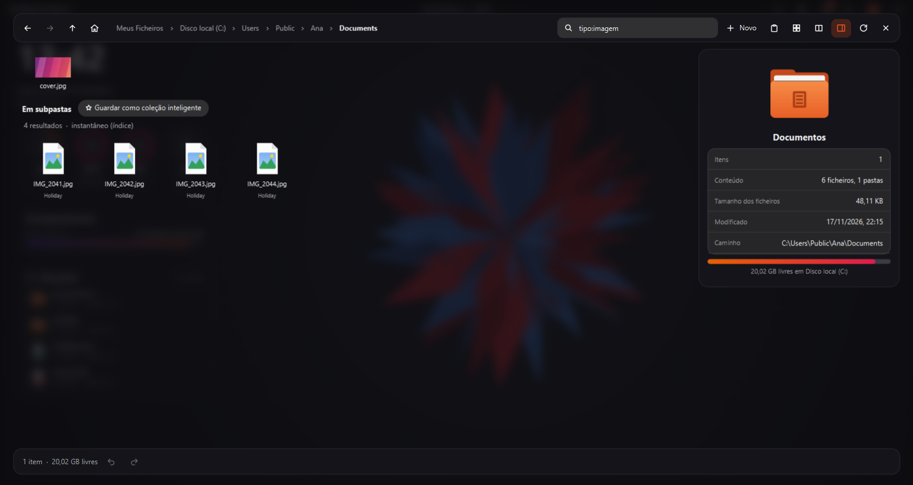

Pesquisa e coleções inteligentes
A caixa de pesquisa está na barra de ferramentas de Meus Ficheiros. Filtra a pasta atual à medida que escreve e procura também nas subpastas. Na Visão geral, pesquisa em toda a sua pasta pessoal.
Os acentos e as maiúsculas são ignorados: relatorio encontra "Relatório".

Filtros#
Os filtros podem ser combinados com palavras e entre si, por exemplo fatura tipo:documento modificado:mes tamanho>200kb.
| Filtro | Exemplos | Encontra |
|---|---|---|
tipo: | tipo:imagem tipo:video tipo:musica tipo:documento tipo:arquivo tipo:codigo tipo:programa tipo:pasta | Itens desse tipo |
ext: ou *. | ext:pdf *.docx | Ficheiros com essa extensão |
tamanho> tamanho< | tamanho>2mb tamanho<500kb tamanho>1gb | Ficheiros maiores ou menores (kb, mb, gb, tb) |
modificado: | modificado:hoje ontem semana mes ano 2025 antigo | Ficheiros alterados nesse período |
etiqueta: | etiqueta:Trabalho | Ficheiros com essa etiqueta |
conteudo: | conteudo:"relatório mensal" | Ficheiros que contêm o texto |
Os nomes dos filtros também funcionam em inglês, espanhol e francês: type:image, size>2mb, modified:today, tag:Trabalho, content:"texto", e assim por diante.
Pesquisar dentro dos ficheiros#
Escreva conteudo:"texto", ou pesquise um nome e carregue no botão Procurar "…" dentro dos ficheiros que aparece por baixo dos resultados. O FileExp mostra cada ficheiro que contém o texto e a linha onde aparece. Lê ficheiros de texto, código, CSV, JSON, XML e ficheiros semelhantes, também em codificações antigas (Latin-1), e documentos do Office: Word (DOCX), Excel (XLSX), PowerPoint (PPTX) e LibreOffice (ODT, ODS, ODP).
O índice da pasta pessoal#
O FileExp constrói um índice da sua pasta pessoal em segundo plano, para que as pesquisas mostrem resultados instantaneamente em vez de percorrerem as pastas de cada vez. O índice é atualizado à medida que os ficheiros mudam. Pastas de programas como .git, AppData, .cache e os dados do próprio FileExp são ignoradas.
Coleções inteligentes#
Uma coleção inteligente é uma pesquisa guardada que está sempre atualizada: "PDFs desta semana", "Vídeos grandes", etiqueta:Trabalho…
- Pesquise o que quer, por exemplo
tipo:video tamanho>500mb. - Carregue em Guardar como coleção inteligente e dê-lhe um nome.
- A coleção aparece na Visão geral; abra-a a qualquer momento para ver os resultados atuais.
Enquanto ainda não tiver nenhuma, a Visão geral oferece exemplos que pode criar com um clique.